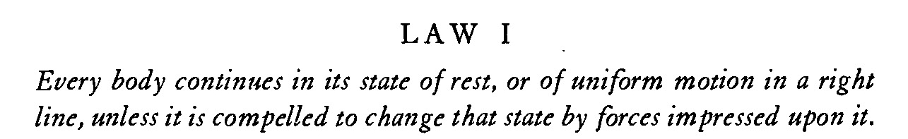
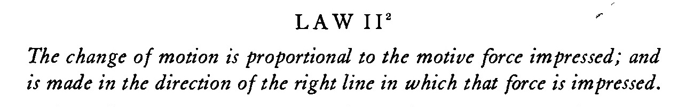
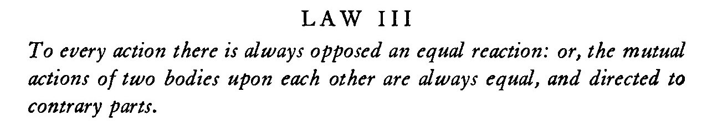

แปลเป็นภาษาไทยได้ว่า "วัตถุจะคงสภาพอยู่นิ่งหรือเคลื่อนที่ด้วยความเร็วคงที่ในแนวเส้นตรง หากไม่มีแรงมากระทำให้เปลี่ยนสภาวะนั้น ๆ ไป"

แปลเป็นภาษาไทยได้ว่า "อัตราการเปลี่ยนแปลงของโมเมนตัมแปรผันโดยตรงกับแรงที่กระทำต่อวัตถุและเกิดขึ้นในทิศที่แรงนั้นกระทำ"
และเขียนในรูปของประโยคสัญลักษณ์ได้ว่า
$$\dot{\vec{P}}=\vec{F}$$

แปลเป็นภาษาไทยได้ว่า "สำหรับการกระทำใด ๆ จะมีการกระทำตรงกันข้ามที่เท่ากันเสมอหรือการกระทำระหว่างวัตถุสองชิ้นใด ๆ ต่อกันและกันมีขนาดเท่ากันเสมอและกระทำต่อส่วนที่ตรงกันข้ามกัน"